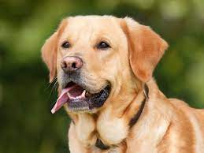

DONCAN
Doncan es un perro de raza labrador. Actualmente tiene 8 años y llegó a
nuestra vida cuando tenía 3 meses. Cuando llegó, era un perro muy hiperactivo
que rompió varios juguetes en menos de un mes, y también un par de zapatos.
Durante su crecimiento, pensamos que su energía se reduciría, pero
estábamos totalmente equivocados. Con el tiempo, ganó más energía y
tamaño, lo que provocaba que alcanzara nuevos lugares donde había cosas
para destruir.
Sin embargo, todo cambió cuando conoció a Luna, la mascota de nuestros
vecinos. Se convirtieron en los mejores amigos, y Luna ayudó mucho a Doncan
a drenar su energía. Ahora, esperaba todas las mañanas para poder salir a jugar
con ella. Así se creó una increíble amistad entre ellos, que perdura hasta el día de hoy.